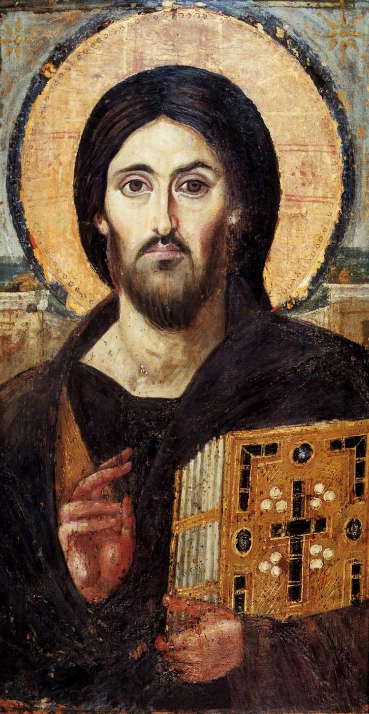

Jesus nasceu em Belém, na Judeia, em um cenário de humildade que contrastava com as profecias que o anunciavam como o Messias. Filho de Maria e criado por José, um carpinteiro, passou sua juventude em Nazaré, onde cresceu em sabedoria. Aos doze anos, já demonstrava um conhecimento profundo das Escrituras no Templo de Jerusalém, sinalizando que sua trajetória não seria comum. Seu ministério público começou por volta dos trinta anos, após ser batizado por João Batista. Jesus percorreu cidades pregando o arrependimento, o amor ao próximo e a chegada do Reino de Deus. Através de parábolas simples, ele ensinou conceitos complexos de ética e espiritualidade, enquanto seus milagres — como curar enfermos, multiplicar alimentos e caminhar sobre as águas — atraíam multidões e confirmavam sua autoridade divina perante seus seguidores. No entanto, sua mensagem desafiou as estruturas religiosas e políticas da época. Após três anos de pregação, Jesus foi traído por um de seus discípulos, Judas Iscariotes, e entregue às autoridades. Condenado à morte por crucificação pelo governador romano Pôncio Pilatos, ele enfrentou o calvário sob humilhações, morrendo em uma sexta-feira no monte Gólgota para, segundo as Escrituras, pagar pelos pecados da humanidade. O desfecho de sua biografia bíblica é marcado pelo sobrenatural. Ao terceiro dia após sua morte, o túmulo foi encontrado vazio e Jesus apareceu ressuscitado aos seus discípulos. Após passar quarenta dias ensinando-os sobre o futuro da igreja, ele ascendeu aos céus, deixando a promessa de que retornaria. Sua vida curta, de aproximadamente 33 anos, tornou-se o alicerce do cristianismo e a principal referência moral para o mundo ocidental.

"Eu sou o Alfa e o èmega, o primeiro e o derradeiro, o princípio e o fim."
A expressão "Eu sou o Alfa e o Ômega" é um título divino encontrado no livro bíblico de Apocalipse, referindo-se a Jesus ou Deus como o princípio e o fim de todas as
coisas. Significa eternidade, onipotência e que Ele é o criador e o consumador da história.